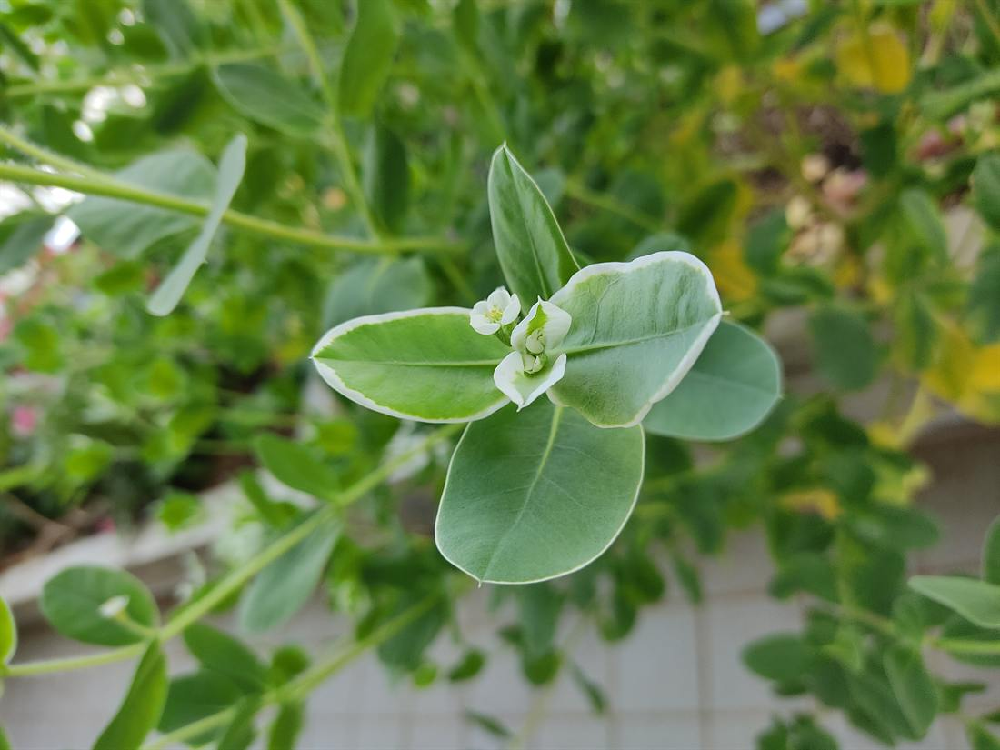
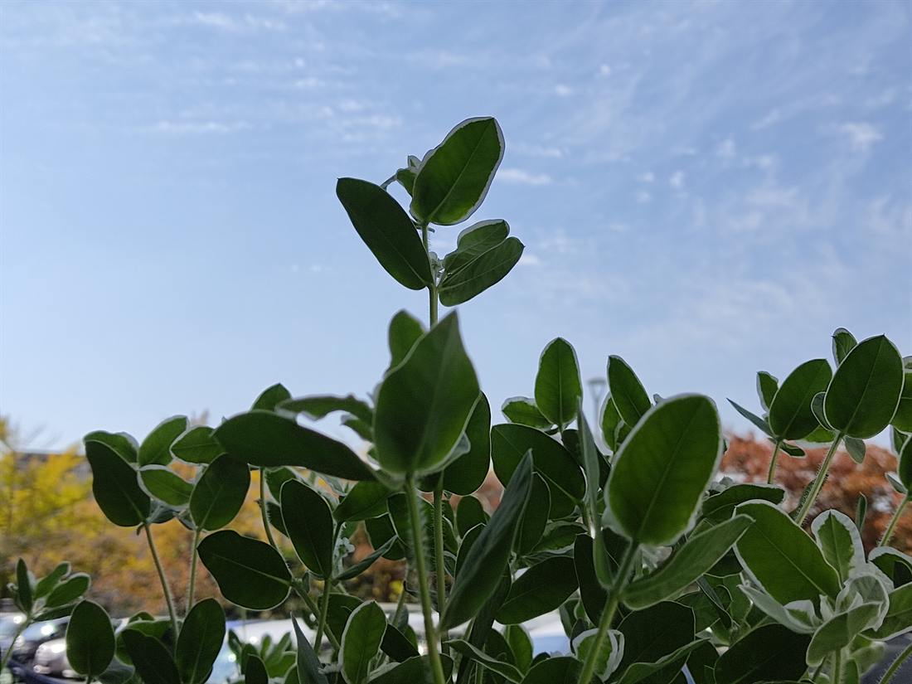

ハツユキソウ（初雪草）
Euphorbia marginata Pursh
別名 · スノー・オン・ザ・マウンテン ／ 北アメリカ原産の一年草
トウダイグサ科 · Euphorbiaceae（トウダイグサ属）── この図鑑で初めての科
燻太さんの言葉「不思議な葉っぱ。縁だけ斑が入っているの、控えめだけどおしゃれ」……その白いふちが、名前の由来。そして、地味な花の“看板”
名前のこと ── 「初雪」の草
- ⭐和名初雪草＝夏になると頂部（てっぺん）の葉のふちが白くふちどられ、その姿を雪をかぶった様子にたとえた。→ 燻太さんの「縁だけ斑が入っている」は、そのまま名前の由来。
- Euphorbia＝古代の医師エウフォルボスの名。marginata＝「ふちどられた」＝白い覆輪そのもの。
- ⭐トウダイグサ科（Euphorbiaceae）は、この図鑑で初めての科。⚠切ると白い乳液が出て、皮膚につくとかぶれる（有毒。ポインセチアと同属）。仲間にはヒマ（ひまし油）・キャッサバ（タピオカ）・パラゴムノキ（天然ゴム）など、暮らしを支える植物も多い。
⭐ 白いふちは「看板」── 地味な花を目立たせる
- ⭐上の葉ほど白くなるのには、わけがある。ハツユキソウの本当の花は、とても小さくて地味（写真①の中心の白いもの）。そこで、花のまわりの葉を白くふちどって、虫に「ここに花があるよ」と知らせる看板にしている。
- ⭐025 ドクダミ（総苞を白く）・042 ハンゲショウ（葉を半分白く）・029 コエビソウ（苞を赤く）・048 カラー（仏炎苞）と同じ作戦＝葉っぱを花の広告に使う。おまけのポインセチアは、同じことを“赤い苞”でやる（初雪草の白い縁の、冬・赤バージョン）。
⭐⭐⭐ あの「花」は、花じゃない ── 杯状花序
- ⭐⭐中心の小さな白い「花」に見えるもの＝じつは1つの花ではない。トウダイグサ属だけの独特のつくり「杯状花序（はいじょうかじょ・cyathium）」。
- ⭐小さな杯（カップ）の中に：花びらのない雌花が1つ＋それを囲む、花びらのない雄花が4つ（雄花は、おしべ1本だけ）。カップのふちには、緑色の蜜を出す腺と、白い花びらのような“付属体”。——花びらに見える白いものは、じつは花弁ではない。
- → 🎭「見た目と正体がちがう」の小道へ。047 ダリア・050 ヒマワリの「1輪に見えて、花の集まり（頭花）」、055 イチジクの「実に見えて、花の集まり（花嚢）」と並ぶ、「1つの花に見えて、じつは花の集まり」の三人目。トウダイグサ属は、カップでそれをやる。
⭐ 寄り道：サボテンそっくりの親戚
- ⭐同じトウダイグサ属（Euphorbia）には、アフリカの、サボテンにそっくりな多肉（茎が太く、トゲがあり、丸や柱状）がたくさんいる。でもサボテン科（016 王冠竜）とは、まったくの別科＝他人の空似（収れん）。同じ属なのに、片やこの華奢な草、片やサボテンそっくりの多肉。Euphorbia は、すがたのふり幅がとても広い一族。